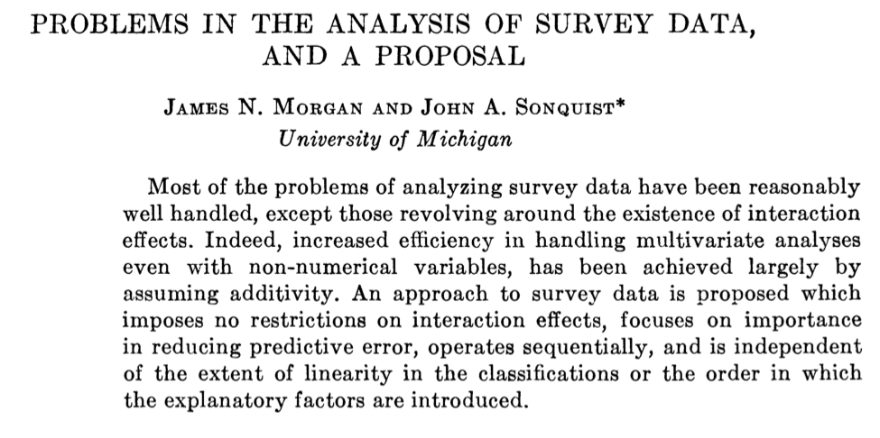
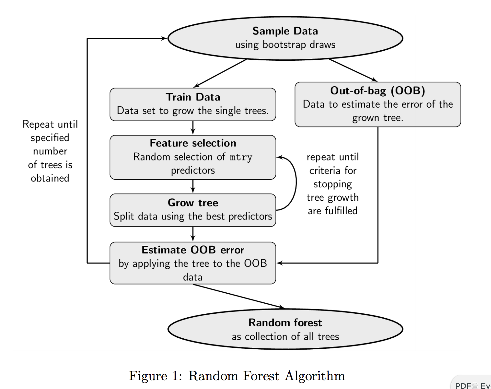
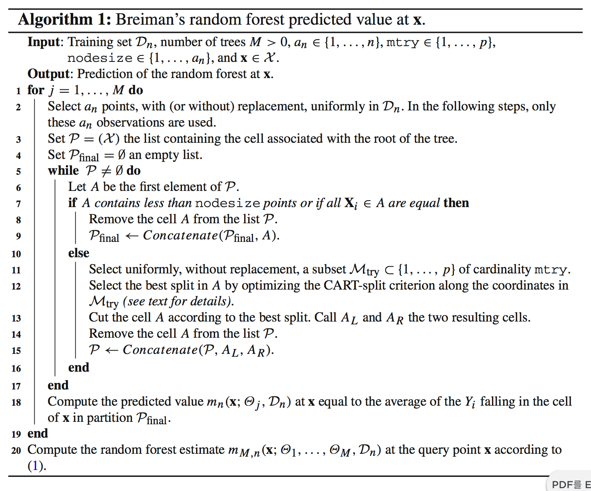

Tree-structured Methods and its Relationship with Deep Learning
Soo-Heang Eo, PhD
July 26, 2016
OUTLINE
OUTLINE - Tree Guided Tour
History of tree-structured models
- Tree-structured Models (a.k.a. Decision Tree)
- CART
- GUIDE including FACT/QUEST/CRUISE/MELT
- PARTY
- Miscellaneous
- Case Studies using R
- CART
- Random Forests
- Bremen’s Random Forests
- GUIDE Forests
- Random forests with conditional inference
- Miscellaneous
- Case Studies using R
- Bremen’s Random Forests
OUTLINE - Trees with Neural Net
- Trees as a nonparametric models
- Trees as a K-NN
- Trees as an additive model
- Trees as a neural networks
Neural random forests
Deep neural decision forests
Decision Tree Guided Tour
History

Random Forest Guided Tour
History
History of Random Forest (RF)
Breiman’s RF Algorithm (2001)

Parameters for RF algorithm
There are three parameters for RF algorithms:
- \(a_n \in \{1, \ldots, n\}\): the number of sampled data points in each tree
- \(mtry \in \{1, \ldots, p\}\): the number of possible directions for splitting at each node of each tree
- \(nodesize \in \{1, \ldots, a_n \}\): the number of examples in each cell below which the cell is not split
By default, in the regression mode of the randomForest package, the parameter
mtry = ceiling(p / 3), a_n = n, and nodesize = 5.
Breiman’s RF Algorithm (2001)
{ width: 50% background: none; }
Variable Importance
RF can be used to rank the importance of variables via two measures of significance:
- Gini importance a.k.a Mean Decrease Impurity (Breiman, 2003a)
- the total decrease in node impurity from splitting on the variablce, averaged over all trees
- yielding a high DGI when selected, leading to a high Gini VIM.
- Permutation Importance a.k.a. Mean Decrease Accuracy (Breiman, 2001)
- if the variable is not important, then rearranging its values shold not degrade prediction accuracy.
- the difference between the OOB error resulting from a data set obtained through random permutation of the predictor of interest and the OOB error resulting from the original dataset.
- Increase the OOB error, leading to a high permutation VIM
For more detail, see [Goldstein et al. (2014)].
VIM: MDA
Set \({\bf X} = (X^{(1)}, \ldots, X^{(p)}).\)
for a forest resulting from the aggregation of \(M\) trees, the MDI of the variable \(X^{(j)}\) is defiend by
\[
\hat{MDI}(X^{(j)}) = \frac{1}{M} \sum_{l = 1}^{M} \sum_{t \in \mathrf{T}_l} p_{n,t} L_{reg, n} (j_{n,t}, z_{n,t}),
\] where
VIM: MDI
Case Studies using R packages
Implementations in R
| Tree-structured Models | Random Forests |
|---|---|
tree::tree |
|
rpart::rpart |
randomForest::rf |
mvpart::mvpart |
randomForestSRC |
party::mob |
Rborist |
psychotree:psychotree |
ranger::ranger |
betareg::betatree |
party::cforest |
RWeka::M5 |
quantregForest:: |
evtree::evtree |
LogicForest:: |
REEMtree::REEMtree |
|
vcrpart::vcrpart |
|
melt::melt |
For more details, see CRAN Task View
DATA: CAR dataset
rpart
## n= 81
##
## node), split, n, loss, yval, (yprob)
## * denotes terminal node
##
## 1) root 81 17 absent (0.79012346 0.20987654)
## 2) Start>=8.5 62 6 absent (0.90322581 0.09677419)
## 4) Start>=14.5 29 0 absent (1.00000000 0.00000000) *
## 5) Start< 14.5 33 6 absent (0.81818182 0.18181818)
## 10) Age< 55 12 0 absent (1.00000000 0.00000000) *
## 11) Age>=55 21 6 absent (0.71428571 0.28571429)
## 22) Age>=111 14 2 absent (0.85714286 0.14285714) *
## 23) Age< 111 7 3 present (0.42857143 0.57142857) *
## 3) Start< 8.5 19 8 present (0.42105263 0.57894737) *mxnet
DATA: CAR Data

DATA: Lending Club Loan Data

DATA: Lending Club Loan Data

Trees with Relationship to Other Methods
Trees as a Nearest Neighbors
For more detail, SeeLin and Jeon (2006).